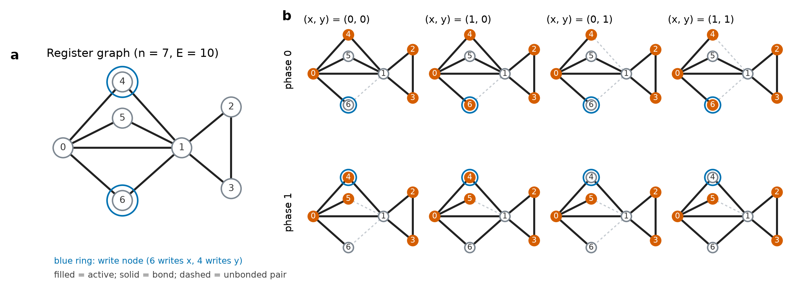
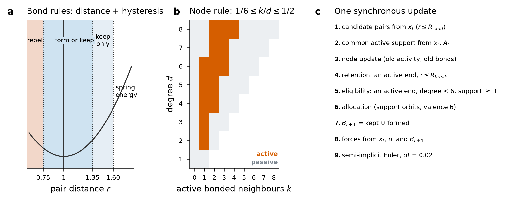
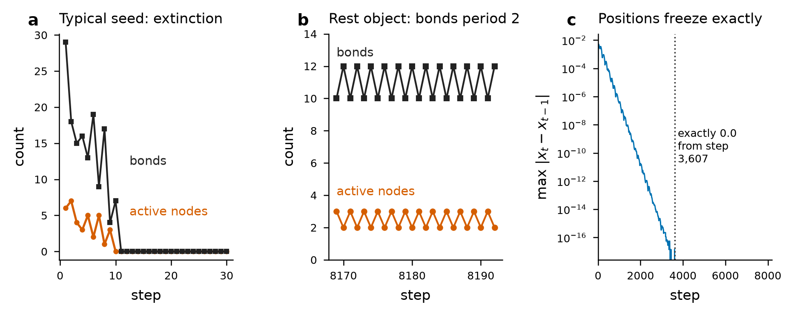
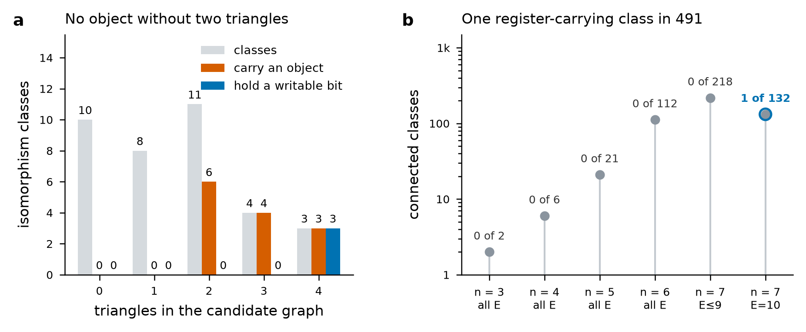
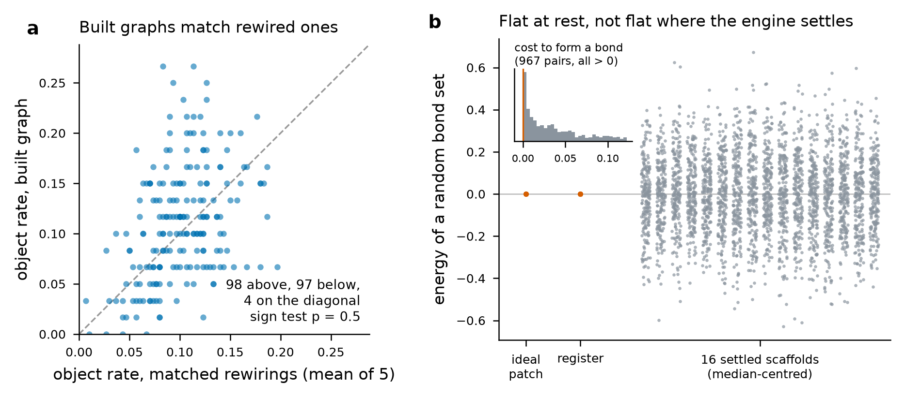
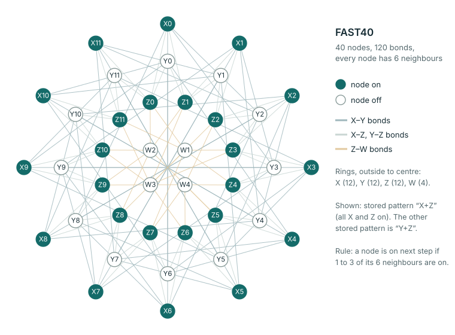
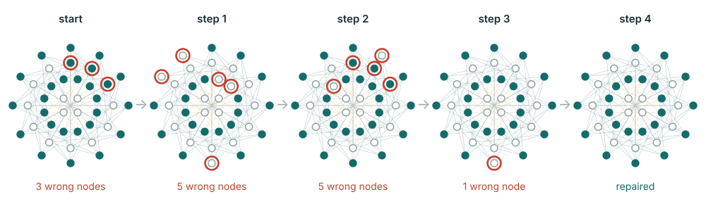
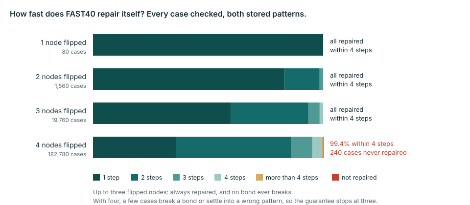
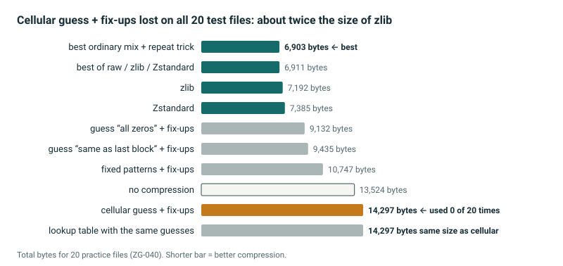
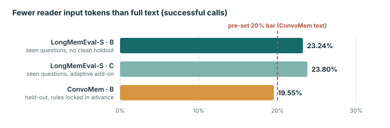

Independent research · Istanbul
Halil Talha Ertan
Memory, networks & efficient AI systems
Exploring what simple systems can remember, and what practical systems can do with less.
01 / About
I am interested in memory: how it can arise on its own in simple dynamical systems, and how it can be stored and searched cheaply in practical ones. One line of work studies network automata whose connections are shaped by the dynamics: particles form and break bonds, a Boolean rule runs on the resulting graph, and the question is what such systems can store. Another line measures compact memory retrieval for conversational agents against standard baselines such as BM25. I prefer exact or exhaustively checked results, negative results reported as such, and fully reproducible code.
02 / Papers & research
Memory without mechanics: exact analysis of a particle-network automaton with rule-driven bonds
Autogenesis U0 couples damped particles in 3D, distance-based bonds with hysteresis, and a Boolean rule on the bond graph. On rest scaffolds, the particle positions stay fixed while the bonds and node states can continue to change. The reported exhaustive search covers 491 connected graph classes: all graphs with three to six nodes, and seven-node graphs with at most ten candidate edges. Exactly one class supports the specified clocked two-bit register, with seven nodes and ten candidate bonds.
The register has an explicit physical realization, but remains fragile under single-node and bond flips. The tested matched-null comparisons do not establish an advantage beyond the graph properties controlled for. These results concern the specified model settings and search family; they do not establish robust memory or spontaneous self-assembly of the register.





Twelve Bytes Against an Inverted Index: What a Compact-Code Memory Retrieval Programme Found, and Which Configuration Choices Decided It
Can a 12-byte code per document replace or complement a BM25 index when an agent searches its conversational memory? In the reported four-benchmark exploratory programme, it did not beat BM25 on any measured axis. Five configuration choices (document unit, query cohort, projection family, benchmark and metric) each reversed a verdict with everything else fixed. Two lossless compactions leave every output bit unchanged while cutting the encoder vocabulary by about 63% and the BM25 index by about 76%.
03 / Research updates
Autogenesis: small networks that repair themselves Work in progress
After the U0 study, the project first looked for switches that the bond energy itself would hold (an “energy-reading” universe, U1). Those searches came out mostly negative. The work then turned to a different question: can a small network of on/off nodes store a pattern and put it back by itself when a few nodes are flipped by mistake? The node rule is the same as in U0, but these networks are designed by hand on a modified bond protocol, not grown by U0’s physics.
The clearest design, FAST40, has 40 nodes and 120 bonds, and every node has six neighbours. It stores two patterns. A written hand proof claims that if any three nodes are flipped, the network returns to the stored pattern within four steps, without changing a single bond. A related 65-node design (FAST65) is claimed to do it in three steps; a further hand proof says that, within that family of designs, three-step repair needs at least 65 nodes.


Independent re-check (3 November 2026). FAST40 had so far been checked only on paper. A separate program, written from the published definition alone, simulated it, including the bond-deletion counters, and tried every way of flipping one, two, three or four nodes for both stored patterns. All 21,400 cases with up to three flips were repaired within four steps, and no bond ever broke. With four flips, 99.4% of 182,780 cases were still repaired within four steps, but 240 were never repaired, so the guarantee really stops at three.

ZipGenesis: can a tiny seed grow back into a file?
ZipGenesis tested whether a short seed, grown by a fixed cellular rule, can stand in for a file. In every test so far it lost to ordinary compression. The study then moved to careful tests of known table-compression techniques, which gave a small gain on one real data set that mostly did not carry over to a second. The latest run is recorded as failed.

A plain-language, figure-rich map of every recent LLMZIP test: shortening the context an AI reader sees (about 23% fewer reader input tokens on already-seen LongMemEval-S questions), a held-out ConvoMem test that came out inconclusive (19.55% saving against a pre-set 20% bar; 347 vs 350 correct of 500), why shortened answers fail, and search and speed attempts that were not adopted.

A context-selection research brief with aggregate findings, methodological limitations, and a proposed independent evaluation. Independent validation has not yet been carried out.
The published pilot reports 419 correct answers with full retrieved sessions and 417 with an older anchored selector, across 487 previously seen questions. Successful final reader calls used 23.2% fewer input tokens with the selector. These figures do not establish equivalent accuracy, generalization or end-to-end cost savings: there was no clean holdout, the questions form one session-connected component, and failed calls, output tokens and evaluation costs are excluded.
04 / Public contributions
JoLT: byte-budget feasibility in discrete allocation
The JoLT repository published a correction to its rank and joint rank/bit allocators: the bisection now retains a budget-feasible iterate and raises an error when the minimum allocation cannot fit. The commit credits Halil Talha Ertan as the reporter. This is a source-level correction and public contribution record; it does not establish revised benchmark results or paper authorship.